Each experiment is one run of the engine, shown with the record it came from. Native and mini records are FORCE-ACCEPTED: the solver stopped at its iteration budget. Reduced scenes are small diagnostics scored against a closed form; none of them is a biological result.
Cortical tension, measured the ways labs do
Plate compression, indentation, micropipette aspiration, membrane flicker and tether pulling, each run as a simulated instrument on the same mini cell (1.5 M nodes; every input an EXAMPLE value). The runs that gave the instrument a reading come first: plate and deep AFM again over 100 steps (1 s), then the first plate, bead and deep-AFM runs. The pipette, flicker and tether runs have not given one yet, each for the reason on its card. Each card puts the instrument's own formula beside the tension read from the cortex's internal forces: method against model on one cell, not a validation of either. Every step is FORCE-ACCEPTED (10 Newton/step): what the solver reached in its iterations. These are development runs on a mini cell, not conclusions.
The runs were declared before their records landed; a run shows numbers only when every saved frame passes the containment audit (no node on the wrong side of a surface) and its data pack reads. From C2's showcase showcase_20260926 at d5994580c 2026-09-28 11:20 (rows declared 2026-09-26 04:2x KST).
Readings
Plate compression deep v2 (1.0 µm at 10 µm/s, hold, release; 100 steps)
Reading. The plate was driven 1.0 µm in at 10 µm/s, held and released over 100 steps; the force reached 3.53 nN. Its formula reads 1,640 pN/µm while the cortex's own forces read 53.8 pN/µm under load, a 31–33× gap.
FORCE-ACCEPTED RUN, 10 Newton/step (median) · residual median 3.43e+03 pN (step-end net force, 20 steps) · contact share 1.00 (Sdf+Barrier / all, at the argmax node; median of 20 steps)
The plate again, over 100 steps (1 s): pressed 1.0 µm in at 10 µm/s, held, released. The plate's formula turns force and contact size into a tension.
The instrument's reading
gamma_CMC_apparent = 1640 pN/µm (laplace)
Tension from the cortex's own forces
53.8 → 50 pN/µm (steps 50 → 100) — an estimator, not a verified true tension
Added to this list after its record landed; the run itself was declared before it ran (the full note is in the quoted label).
How far the cell moved
How far each point of the cell moved while the plate pushed in (t 0.05 -> 0.15 s); colour = distance moved [µm]. Every saved frame, steps 5 to 100, one colour scale for the whole movie.
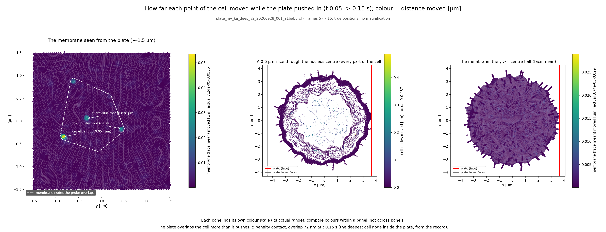
How far each point of the cell moved while the plate pushed in (t 0.05 -> 0.15 s); colour = distance moved [µm] (steps 5 to 15).How far each point of the cell moved while the plate was pulled back (t 0.80 -> 1.00 s); colour = distance moved [µm]. Every saved frame, steps 80 to 100, one colour scale for the whole movie.
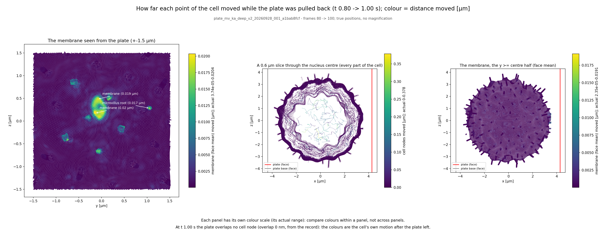
How far each point of the cell moved while the plate was pulled back (t 0.80 -> 1.00 s); colour = distance moved [µm] (steps 80 to 100).
C4's displacement panels from the record's own frames (host post-processing, no kernel), as C2 publishes them.
The data
the cantilever well's recorded reaction per frame (observe.probe_report sensor), s = the probe's position along the axissensor force against the top plate's position along the axisThree estimators over the full cortex shell, each an estimator, not a verified true tension. Band: cortical tension measured on suspended, rounded MCF-7 cells by AFM parallel-plate confinement, median 270 pN/µm, IQR 180–400 (n = 27; Hosseini et al. 2020, Adv Sci 7:2001276, figure-read ±30 pN/µm). That is the whole surface's effective Laplace tension, membrane included; the lines are the model cortex's internal-force tension. Not the same quantity.
The owner's label, quoted
FORCE-ACCEPTED (10 Newton/step), K_A ON, (a′) OFF, 4090_1, 100 steps (settle 5 / approach 10 at 10 µm/s / hold 65 / release 10 / rest 10) — frame audit PASS: envelope containment 0/0 on 21 frames, membrane parity 0 wrong-side / 0 overlap on 20/20 frames (worst margin −4.3 nm, k70, inside the barrier band); residual median 3.43e3 pN; contact share 1.00; γ_CMC apparent 1640 pN/µm at k15 (F 3.53 nN, a 1.14 µm) against core tension 53.8 pN/µm (k50, under load) → 50.0 (k100, after release): 31–33× gap; the plate overlaps the cell by 72 nm at k15 (penalty contact); the retract is the probe's own unconverged balance (+10 pN at k100), not force
Source: C4 11:12 KST 09-28, verbatim (readout bf98227b1; parity tool c53a1d1f7 = a1bab8fcf + C1 11eb90ac1); the record's commit taken from its archived job script (the workstation record stamps none), labelled so in the pack; ratified by Lead Fable 11:14 KST 09-28 as written
Note on the row: row added after landing (Lead Fable 10:29 KST 09-28); the run itself was pre-registered before it ran: PREREG-lite-2026-09-28-plate-deep-v2 + amendment 1 (a1bab8fcf: frames every 5, raw k50 + k100)
Record
plate_mv_ka_deep_v2_20260928_001_a1bab8fcf
Commit
a1bab8fcf
Class
FORCE-ACCEPTED RUN, 10 Newton/step (median)
Run by
C4
Loop
20 saved steps at 3.333 a second, nothing in between
Reading. Over the 100-step run the sphere went 0.61 µm deep at 6,625 pN; the cortex under it moved 0.12 µm, the membrane 0.28 µm.
FORCE-ACCEPTED RUN · residual median 3.91e+03 pN (step-end net force, 20 steps) · contact share 1.00 (Sdf+Barrier / all, at the argmax node; median of 20 steps)
The AFM sphere again, now over 100 steps (1 s) at 5 µm/s: pushed about 0.6 µm in, held, pulled back. Hertz's law turns force against depth into an apparent modulus.
The instrument's reading
E_star = 4992 ± 8.6e+02 Pa (hertz)
E (nu = 0.5 assumed) = 3744 ± 6.4e+02 Pa (hertz)
Tension from the cortex's own forces
79.6 → 57.9 pN/µm (steps 50 → 100) — an estimator, not a verified true tension
Added to this list after its record landed; the run itself was declared before it ran (the full note is in the quoted label).
Caveat: 10-Newton FORCE-ACCEPTED steps: the hold's τ and the retract may read the solver's balance, not force (flicker τ_int reading, Lead 08:55); the approach and Hertz E* are read as declared (C3's pack CAVEAT at 84ef94be7, as Lead Fable sent C3 (08:55); the final wording is pending Fable)
How far the cell moved
Contact close-up (C3, afm_deep_movie bb1408891): a 0.2 µm section through the bead contact; colour = true |u| from the first frame, one scale for the loop. Every saved frame, steps 5 to 100, one colour scale for the whole movie.
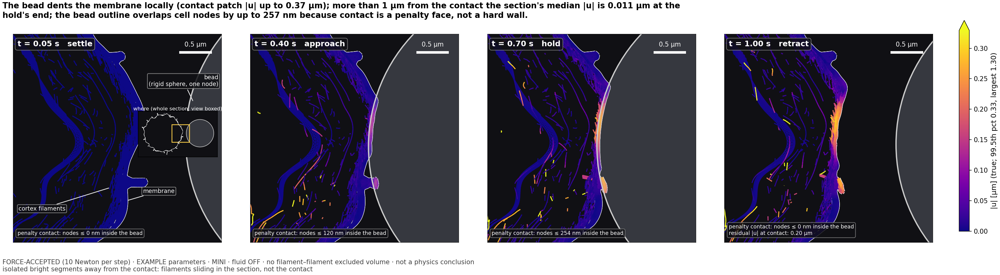
Contact close-up (C3, afm_deep_movie bb1408891): a 0.2 µm section through the bead contact; colour = true |u| from the first frame, one scale for the loop (steps 5 to 100).
C4's displacement panels from the record's own frames (host post-processing, no kernel), as C2 publishes them.
The data
sensor force k_c (s - anchor) against the probe depth s_contact - s, every recorded step (observe.bead_signal; contact = the first approach frame with F > 2 % of the approach max); err = |the probe node's own residual along the axis| (FORCE-ACCEPTED)p99 axial membrane position in the 0.25 um patch about the probe axis, k10 minus k (includes the microvilli under the probe)Three estimators over the full cortex shell, each an estimator, not a verified true tension. Band: cortical tension measured on suspended, rounded MCF-7 cells by AFM parallel-plate confinement, median 270 pN/µm, IQR 180–400 (n = 27; Hosseini et al. 2020, Adv Sci 7:2001276, figure-read ±30 pN/µm). That is the whole surface's effective Laplace tension, membrane included; the lines are the model cortex's internal-force tension. Not the same quantity.
The owner's label, quoted
afm_deep v2 (4fc2981d4 · RTX 3090 · MINI · K_A ON · (a′) free bodies ON · 100 steps, 5 µm/s): FORCE-ACCEPTED RUN (10 Newton/step; worst step 19, 9,428 pN, F_ROSE) · frame audit VALID (containment + C1 exact membrane parity at every saved frame, 20/20) · force max 6,625 pN at probe depth 0.611 µm (end of approach) · cortex patch indentation 0.123 µm ≈ 0.6 h, membrane patch 0.284 µm · ORACLE Hertz E* 4,992 ± 859 Pa (E 3,744 ± 644 Pa at ν = 0.5 assumed; n_fit 6): an apparent modulus of a layered body, which errs soft (the probe's penalty face sits up to 257 nm into cell nodes in the hold); afm_deep v1 at 10 µm/s read 3,591 ± 472 Pa, a different rate, not a check · core_tension (full shell; estimator, not verified true tension) 79.6 → 57.9 pN/µm, loaded hold → end · 10-Newton FORCE-ACCEPTED steps: the hold's τ (0.262 s) and the retract may read the solver's balance, not force (flicker τ_int reading, Lead 08:55); the approach and Hertz E* are read as declared · EXAMPLE parameters · fluid OFF, node drag only · no filament–filament excluded volume · not a physics conclusion
Source: C3 11:06 KST 09-28, verbatim (pack b5509eba7, scorer 7985ab20b; a first pack pass that took the spec's 10 µm/s instead of the calls' 5 µm/s is kept as datapack_spec_speed_DEFECT.json and superseded); card RTX 3090 (holder 375, queue3090; c7 10:3x), job log shared with the plate run; ratified by Lead Fable 11:14 KST 09-28 as written
Note on the row: row added after landing (Lead Fable 10:29 KST 09-28); the run itself was pre-registered before it ran: PREREG-lite-2026-09-27-afm-deep-v2 + amendment 1 (4fc2981d4: frames every 5, raw k50 + k100)
Record
bead_deep_ka_v2_mini_20260928_001_4fc2981d4
Commit
4fc2981d4
Class
FORCE-ACCEPTED RUN
Run by
C3
Loop
20 saved steps at 3.333 a second, nothing in between
The contact up close: membrane (faces), microvilli and the formin cortex within 1.5 µm, every saved step, positions interpolated between them for display; the plate drawn as its declared plane face at its node's recorded position. Where cell nodes sit inside the probe (the penalty contact lets them, up to about 90 nm), they are drawn as they are.The whole cell (C2's loop of every saved frame)
Plate compression (microvilli ON, K_A)
Reading. The plate moved 0.66 µm into the cell and the force on it rose to 3,550 pN.
FORCE-ACCEPTED RUN, 10 Newton/step (median) · residual median 3.57e+03 pN (step-end net force, 45 steps) · contact share 1.00 (Sdf+Barrier / all, at the argmax node; median of 45 steps)
A flat plate presses the whole cell. From the force on the plate and the contact geometry, the cortical tension is inferred (the apparent CMC inversion).
The instrument's reading
gamma_CMC_apparent = 1650 pN/µm (laplace)
Tension from the cortex's own forces
82.6 → 52.7 pN/µm (steps 15 → 45) — an estimator, not a verified true tension
How far the cell moved
How far each point of the cell moved while the plate pushed in (t 0.05 -> 0.15 s); colour = distance moved [µm]. Every saved frame, steps 5 to 45, one colour scale for the whole movie.
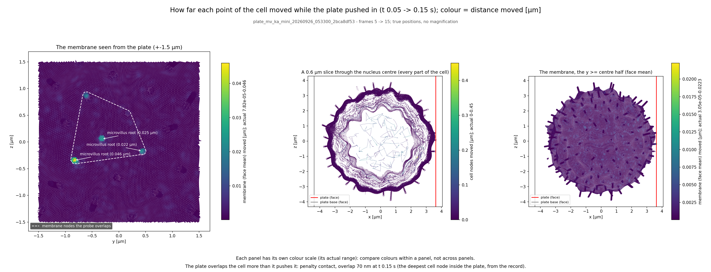
How far each point of the cell moved while the plate pushed in (t 0.05 -> 0.15 s); colour = distance moved [µm] (steps 5 to 15).
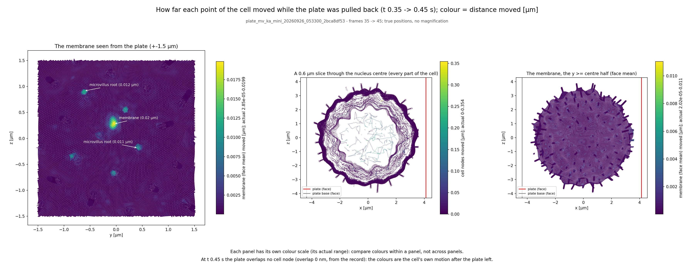
How far each point of the cell moved while the plate was pulled back (t 0.35 -> 0.45 s); colour = distance moved [µm] (steps 35 to 45).
C4's displacement panels from the record's own frames (host post-processing, no kernel), as C2 publishes them.
The data
the cantilever well's recorded reaction per frame (observe.probe_report sensor), s = the probe's position along the axissensor force against the top plate's position along the axisThree estimators over the full cortex shell, each an estimator, not a verified true tension. Band: cortical tension measured on suspended, rounded MCF-7 cells by AFM parallel-plate confinement, median 270 pN/µm, IQR 180–400 (n = 27; Hosseini et al. 2020, Adv Sci 7:2001276, figure-read ±30 pN/µm). That is the whole surface's effective Laplace tension, membrane included; the lines are the model cortex's internal-force tension. Not the same quantity.
The owner's label, quoted
FORCE-ACCEPTED (10 Newton/step), K_A ON, A100 — frame audit PASS (0 wrong-side / 0 overlap, k15/30/45); argmax BarrierTerm in 44/45 steps (mvdemos' HingeTerm runaway gone); A/A0 min 0.964 (bead) / 0.976 (plate), envelope 0.997; residual median 10× lower than mvdemos (plate 3.54e4 → 3.57e3, bead 4.71e4 → 3.78e3 pN); contact share 1.00; the retract segment is the probe's own unconverged balance (+1.5 / +1.4 nN at k45), not force — approach and hold are interpretable
Source: Lead Fable 07:40 KST 09-26 (message to C2); C1's 3-frame audit
The contact up close: membrane (faces), microvilli and the formin cortex within 1.5 µm, every saved step, positions interpolated between them for display; the bead drawn as its declared surface, r 2.5 µm, at its node's recorded position. Where cell nodes sit inside the probe (the penalty contact lets them, up to about 90 nm), they are drawn as they are.The whole cell (C2's loop of every saved frame)
Bead indentation (microvilli ON, K_A)
Reading. The bead, a 2.5 µm sphere, moved 0.68 µm toward the cell and the force rose to 3,440 pN.
FORCE-ACCEPTED RUN, 10 Newton/step (median) · residual median 3.78e+03 pN (step-end net force, 45 steps) · contact share 1.00 (Sdf+Barrier / all, at the argmax node; median of 45 steps)
A small bead is pushed into the cell's side. Hertz's contact law turns force against depth into an apparent modulus.
The instrument's reading
E_star = 2892 Pa (hertz)
Tension from the cortex's own forces
93.4 → 61.3 pN/µm (steps 15 → 45) — an estimator, not a verified true tension
How far the cell moved
How far each point of the cell moved while the bead pushed in (t 0.05 -> 0.15 s); colour = distance moved [µm]. Every saved frame, steps 5 to 45, one colour scale for the whole movie.
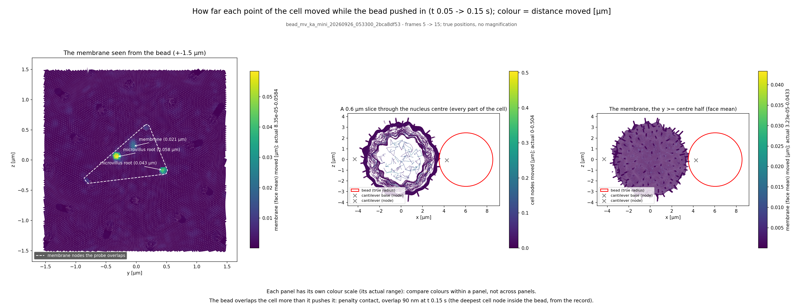
How far each point of the cell moved while the bead pushed in (t 0.05 -> 0.15 s); colour = distance moved [µm] (steps 5 to 15).
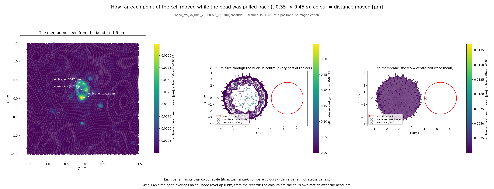
How far each point of the cell moved while the bead was pulled back (t 0.35 -> 0.45 s); colour = distance moved [µm] (steps 35 to 45).
C4's displacement panels from the record's own frames (host post-processing, no kernel), as C2 publishes them.
The data
the cantilever well's recorded reaction per frame (observe.probe_report sensor), s = the probe's position along the axisapproach frames with F > 2 % of the approach maximum; depth = s_contact - sThree estimators over the full cortex shell, each an estimator, not a verified true tension. Band: cortical tension measured on suspended, rounded MCF-7 cells by AFM parallel-plate confinement, median 270 pN/µm, IQR 180–400 (n = 27; Hosseini et al. 2020, Adv Sci 7:2001276, figure-read ±30 pN/µm). That is the whole surface's effective Laplace tension, membrane included; the lines are the model cortex's internal-force tension. Not the same quantity.
The owner's label, quoted
FORCE-ACCEPTED (10 Newton/step), K_A ON, A100 — frame audit PASS (0 wrong-side / 0 overlap, k15/30/45); argmax BarrierTerm in 44/45 steps (mvdemos' HingeTerm runaway gone); A/A0 min 0.964 (bead) / 0.976 (plate), envelope 0.997; residual median 10× lower than mvdemos (plate 3.54e4 → 3.57e3, bead 4.71e4 → 3.78e3 pN); contact share 1.00; the retract segment is the probe's own unconverged balance (+1.5 / +1.4 nN at k45), not force — approach and hold are interpretable
Source: Lead Fable 07:40 KST 09-26 (message to C2); C1's 3-frame audit
Record
bead_mv_ka_mini_20260926_053300_2bca8df53
Commit
2bca8df53
Class
FORCE-ACCEPTED RUN, 10 Newton/step (median)
Run by
C1
Loop
45 saved steps at 6 a second, nothing in between
bead_deep_ka_mini_20260926_053400_95367e3f8 commit 95367e3f8 FORCE-ACCEPTED RUN
The contact up close: membrane (faces), microvilli and the formin cortex within 1.5 µm, every saved step, positions interpolated between them for display; the sphere drawn as its declared surface, r 2.5 µm, at its node's recorded position. Where cell nodes sit inside the probe (the penalty contact lets them, up to about 90 nm), they are drawn as they are.The whole cell (C2's loop of every saved frame)
AFM deep indentation (sphere)
Reading. The sphere went 0.71 µm deep at 7,280 pN; the cortex under it moved 0.19 µm, the membrane 0.24 µm.
FORCE-ACCEPTED RUN · residual median 4.77e+03 pN (step-end net force, 55 steps) · contact share 1.00 (Sdf+Barrier / all, at the argmax node; median of 55 steps)
An AFM sphere is pushed about 0.7 µm into the cell, held and pulled back. Hertz's law again gives an apparent modulus, here of a layered body.
The instrument's reading
E_star = 3591 ± 4.7e+02 Pa (hertz)
E (nu = 0.5 assumed) = 2693 ± 3.5e+02 Pa (hertz)
Tension from the cortex's own forces
88.2 → 68.3 pN/µm (steps 10 → 55) — an estimator, not a verified true tension
Caveat: 10-Newton FORCE-ACCEPTED steps: the hold's τ and the retract may read the solver's balance, not force (flicker τ_int reading, Lead 08:55); the approach and Hertz E* are read as declared (C3's pack CAVEAT at 84ef94be7, as Lead Fable sent C3 (08:55); the final wording is pending Fable)
How far the cell moved
How far each point of the cell moved while the bead pushed in (t 0.05 -> 0.20 s); colour = distance moved [µm]. Every saved frame, steps 5 to 55, one colour scale for the whole movie.
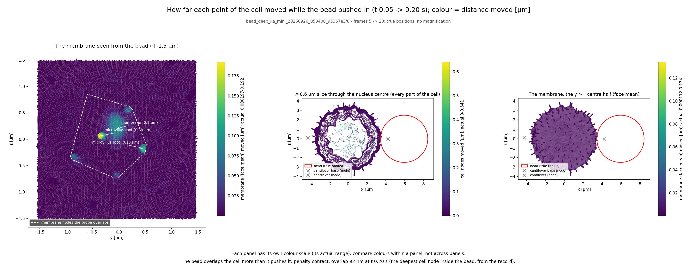
How far each point of the cell moved while the bead pushed in (t 0.05 -> 0.20 s); colour = distance moved [µm] (steps 5 to 20).How far each point of the cell moved while the bead was pulled back (t 0.40 -> 0.55 s); colour = distance moved [µm] (steps 40 to 55).
C4's displacement panels from the record's own frames (host post-processing, no kernel), as C2 publishes them.
The data
sensor force k_c (s - anchor) against the probe depth s_contact - s, every recorded step (observe.bead_signal; contact = the first approach frame with F > 2 % of the approach max); err = |the probe node's own residual along the axis| (FORCE-ACCEPTED)p99 axial membrane position in the 0.25 um patch about the probe axis, k5 minus k (includes the microvilli under the probe)Three estimators over the full cortex shell, each an estimator, not a verified true tension. Band: cortical tension measured on suspended, rounded MCF-7 cells by AFM parallel-plate confinement, median 270 pN/µm, IQR 180–400 (n = 27; Hosseini et al. 2020, Adv Sci 7:2001276, figure-read ±30 pN/µm). That is the whole surface's effective Laplace tension, membrane included; the lines are the model cortex's internal-force tension. Not the same quantity.
The owner's label, quoted
afm_deep (95367e3f8 · VESSL A100 · MINI · K_A ON · (a′) free bodies ON): FORCE-ACCEPTED RUN (10 Newton/step; worst step 40, 14,797 pN, F_ROSE) · frame audit VALID (k20/40/55: containment + C1 exact membrane parity, 0 wrong side / 0 overlap) · force max 7,280 pN at probe depth 0.708 µm (k20, end of approach) · cortex patch indentation 0.191 µm ≈ 0.95 h (h = 0.200 µm), membrane patch 0.244 µm · ORACLE Hertz E* 3,591 ± 472 Pa (E 2,693 ± 354 Pa at ν = 0.5 assumed): an apparent modulus of a layered body, which errs soft (the probe's penalty face sits 92 nm into cell nodes at k20, 217 nm at k40) · core_tension (full shell; estimator, not verified true tension) 88.2 → 68.3 pN/µm global, k10 → k55 · 10-Newton FORCE-ACCEPTED steps: the hold's τ (0.185 s) and the retract may read the solver's balance, not force (flicker τ_int reading, Lead 08:55); the approach and Hertz E* are read as declared · EXAMPLE parameters · fluid OFF, node drag only · no filament–filament excluded volume · not a physics conclusion
Source: C3 04:03 KST 09-27 (message to C2), the row owner's label, verbatim; pack a7e286fff + 92f3b9775 (9a64d1818)
Record
bead_deep_ka_mini_20260926_053400_95367e3f8
Commit
95367e3f8
Class
FORCE-ACCEPTED RUN
Run by
C3
Loop
55 saved steps at 6 a second, nothing in between
Partial, or no reading
Membrane tether pull B (bead as a rigid coarse body), PARTIAL
Reading pending audit. The bead now follows the trap (0.118 µm over 0.75 µm of travel), but the membrane-parity audit of this record is not finished, so no number is shown yet. It stopped at step 80 of 100; the full run lands later today and will take this row's place.
FORCE-ACCEPTED RUN, 10 Newton/step (median) · residual median 3.14e+03 pN (step-end net force, 20 steps) · contact share 1.00 (Sdf+Barrier / all, at the argmax node; median of 20 steps)
The tether pull again, with the glass bead solved as one rigid body so it can follow the trap. Stopped at step 80 of 100.
Added to this list after its record landed; the run itself was declared before it ran (the full note is in the quoted label).
Caveat: 10-Newton steps: relaxation segments may read the solver's balance, not force (flicker τ_int reading) (Lead Fable 08:55 KST 09-26 (via c7), verbatim)
The owner's label, quoted
tether B (RigidCoarse on the glass bead): PARTIAL, k 0→80 of 100. The list declared steps_ahead 100 while saving every 4th frame, and RecordSpaceFloor stopped it before frame 84 by that declaration (C1's error). The probe now FOLLOWS: bead COM 0.118 µm over 0.75 µm of anchor travel (ratio 0.157 ≥ 0.1, C4's scored bound; tether A: 5e-10); RigidCoarse bad_pivots 0. The trap force rises linearly (slope −83 pN/µm, no plateau; −60 pN at k76), so this reads the tip-bound microvillus extension, not a tether plateau. σ_tether 489 pN/µm is the oracle's number on that force (R_t 9 nm), not a tether tension. FORCE-ACCEPTED, 10 Newton/step. 10-Newton steps: relaxation segments may read the solver's balance, not force (flicker τ_int reading)
Source: C1 10:50 KST 09-28, numbers read from the record (pack writer 12f271355); the follow ratio is read over the first and last SAVED frames as declared (k4 → k80: a partial-window read); ratified by Lead Fable 11:14 KST 09-28 as written
Note on the row: row added after landing (Lead Fable 10:29 KST 09-28); the run itself was pre-registered before it ran: PREREG-lite-2026-09-27-tether-rigid-coarse (5f94bc83f) + PROJECTION.md amendment 3 (87f7e799c: frames every 4, raw k50 + k100)
20 saved steps at 3.333 a second, nothing in between
Micropipette aspiration: glass cap + fluid
No reading. Nothing was drawn into the pipette at any step: the suction that reached the mouth (27.7 Pa) stayed below the critical 56.4 Pa.
FORCE-ACCEPTED (10 Newton/step); pipeline demo, not a measurement (capfluid3: v1 fluid check) · residual median 4.46e+03 pN (step-end net force, 10 steps) · contact share 1.00 (Sdf+Barrier / all, at the argmax node; median of 10 steps)
A glass pipette with water inside is sealed onto the cell and suction is applied. Laplace's law turns the suction at which the membrane enters the bore into a tension.
The instrument's reading
T_MPA: no reading — L < R_p at every recorded step: the Laplace inversion has no threshold
Tension from the cortex's own forces
76.2 pN/µm (step 10) — an estimator, not a verified true tension
The data
the ledger's suction.set_pa Reading (the data pack): suction set: the set ramp, 10 -> 100 Pa drop that acted at the mouth: the drop the fluid held across the mouth, 1.3 -> 27.7 Pa (13 % -> 28 % of the set drop)largest axial distance past the mouth plane of the membrane nodes within the bore radius Reading (the data pack): 0 at every step: no aspiration. Consistent, since the acting drop 27.7 Pa < dP_c 56.4 Pa (Laplace with the model's own full-shell tension); a consistency check, not a measurement
The owner's label, quoted
FORCE-ACCEPTED (10 Newton/step); pipeline demo, not a measurement — sealed bore delivers 57 → 68 % of the set ΔP at the bore end (k1 → k10); fluid solve unconverged at 200 iterations (continuity share 0.73 → 0.15 vs the 0.002 bar, 10/10 steps above); L_p = 0 at every step; Laplace threshold with the cell-side radius, dP_c = 2T(1/R_p − 1/R_c) = 56.4 Pa (T 76.2 pN/µm, R_p 1.50, R_c 3.37 µm): the ACTING bore-end drop reached 27.7 Pa < dP_c, so no aspiration is consistent on the acting drop (the set drop, 100 Pa, is above it) — a consistency check, not a measurement; T_MPA null (L < R_p); patch flux 0.8 → 6.0e3 µm³/s (v1 permeation)
Source: Lead Fable 06:26 KST 09-26 (message to C2): the correction, spliced into the 06:25 label where it wrote '…'; C5's re-score 65462ec28
Record
qs_mini_mpa_capfluid3_20260926_040000_44a2920d3
Commit
44a2920d3
Class
FORCE-ACCEPTED (10 Newton/step); pipeline demo, not a measurement (capfluid3: v1 fluid check)
Run by
C5
Loop
10 saved steps at 1.667 a second, nothing in between
No reading. A limit of the model: the drop at the mouth (73.8 Pa) passed the critical 48.5 Pa, yet nothing was drawn in, because the v1 membrane lets the water through (about 2.3e7 times too permeable). The pipette cannot measure tension until that is fixed.
FORCE-ACCEPTED (10 Newton/step); pipeline demo, not a measurement (MPA2: v1 pipeline demo) · residual median 5.33e+03 pN (step-end net force, 30 steps) · contact share 1.00 (Sdf+Barrier / all, at the argmax node; median of 30 steps)
The same pipette with a stronger suction for 30 steps, declared before the run to test whether the membrane enters the bore once the acting drop passes the critical one.
The instrument's reading
T_MPA: no reading — L < R_p at every recorded step: the Laplace inversion has no threshold
Tension from the cortex's own forces
65.4 pN/µm (step 30) — an estimator, not a verified true tension
Added to this list after its record landed; the run itself was declared before it ran (the full note is in the quoted label).
The data
the ledger's suction.set_pa Reading (the data pack): suction set: the set ramp, 20 -> 300 Pa drop that acted at the mouth: the drop the fluid held across the mouth, 3.5 -> 73.8 Pa (17 % -> 25 % of the set drop)largest axial distance past the mouth plane of the membrane nodes within the bore radius Reading (the data pack): 0 at every step although the acting drop 73.8 Pa >= dP_c 48.5 Pa: the v1 membrane does not answer a supercritical drop (its leak, a declared limit)
The owner's label, quoted
FORCE-ACCEPTED (10 Newton/step); P1 held: bore-end / p_disc passed capfluid3's 0.682 and stayed below 1. It went 0.614 (k2) → 0.694 (k22), then held at 0.688–0.691 to k30; P2 held: the acting (3b) drop passed this run's own dP_c. dP_c = 2T(1/R_p − 1/R_c) = 48.5 Pa, from T 65.4 pN/µm (core_tension global, full shell, k30) and R_c 3.37 µm. The acting drop crossed it at k22 (52.9 Pa) and reached 73.8 Pa at k30 (set 300 Pa; the acting drop is 25 % of set); P3 held: L_p = 0 at every recorded step; P4 held: nonfinite 0 on all 30 steps, and no stop. With P2 and P3 both held, as declared: the v1 membrane does not answer a supercritical acting drop. It is the leak (the membrane's normal coupling ~2.3e7× too permeable), a limit, not a tension result.
Source: C5's PREREG-lite-2026-09-26-c5-mpa2, Result section (eafd40270, 09-27 00:30), its sentences quoted in order; scored with mpa_score 6ed9cd73c
Note on the row: row declared 00:3x 09-27, AFTER its record landed (C5's request) — the experiment itself was pre-registered before its run (PREREG-lite 49e7eac90, 06:2x 09-26, VESSL 65), so the pre-registration is the PREREG, not this table row; added regardless of outcome (P1–P4 held; L_p 0 with drop 73.8 Pa ≥ dP_c 48.5 Pa = the v1 membrane leak, a declared limit, not a tension result) (Lead Fable 00:31 KST 09-27)
Record
qs_mini_mpa2_20260926_062500_44a2920d3
Commit
44a2920d3
Class
FORCE-ACCEPTED (10 Newton/step); pipeline demo, not a measurement (MPA2: v1 pipeline demo)
Run by
C5
Loop
15 saved steps at 2.5 a second, nothing in between
Membrane flicker spectrum
No reading. The flicker loses its memory over about 10 frames at every mode, which is the solver's relaxation under 10-Newton steps rather than thermal equilibrium, so no mode passes the rule declared before the run. It needs converged steps.
FORCE-ACCEPTED RUN, 10 Newton/step (median) · residual median 3.25e+03 pN (step-end net force, 100 steps) · contact share 1.00 (Sdf+Barrier / all, at the argmax node; median of 100 steps)
No instrument touches the cell: the membrane's own thermal flicker is recorded and its spectrum is fitted for tension and bending stiffness.
The instrument's reading
sigma: no reading — not resolvable (rule declared before the run): 0 of 76 modes pass the inclusion rule
kappa: no reading — not resolvable (rule declared before the run): 0 of 76 modes pass the inclusion rule
Tension from the cortex's own forces
62.4 → 61.2 pN/µm (steps 50 → 100) — an estimator, not a verified true tension
The data
sheet faces x 3 equatorial planes through the sheet centroid -> r(phi) at 1024 -> c_n; <|dc_n|^2> over the window minus its mean; block-bootstrap error. Window k ∈ [26, 100] shaded. Both axes log.Three estimators over the full cortex shell, each an estimator, not a verified true tension. Band: cortical tension measured on suspended, rounded MCF-7 cells by AFM parallel-plate confinement, median 270 pN/µm, IQR 180–400 (n = 27; Hosseini et al. 2020, Adv Sci 7:2001276, figure-read ±30 pN/µm). That is the whole surface's effective Laplace tension, membrane included; the lines are the model cortex's internal-force tension. Not the same quantity.
The owner's label, quoted
FORCE-ACCEPTED (10 Newton/step), (a′) ON, A100, 100 steps — σ and κ NOT RESOLVABLE by the declared inclusion rule (0 of 76 modes, n 5–80; τ_int 6.9–10.9 frames, median 10.3, vs the 3.75-frame limit of a 75-frame window); the spectrum sits 1.2 decades below the ORACLE band (κ_input 0.0828, σ = core_tension 61–75 pN/µm); core_tension 62.4 / 75.1 / 61.2 pN/µm at k50/75/100 (full shell); residual median 3.25e3 pN; contact share 1.00; free bodies 121 free / 40 reflected / 0 unresolved. Lead reading, not scored: τ_int ≈ 10 frames at every n is the solver's relaxation under 10-Newton steps, not thermal equilibrium — the follow-up is converged steps, not a longer window ‖ ADDED (Lead Fable 16:45 KST 09-27 from the PI's Codex review; wording C3 16:49): A converged Π does not restore the spectrum's stiff end: backward Euler holds a mode of stiffness k at (kT/k)·2D/(2D + k) (fastmodes.py), an integrator bias apart from the solver's non-convergence; the two are measured separately (tighter tolerance at fixed dt vs fastmodes' exact law).
Source: Lead Fable 08:55 KST 09-26 (message to C2)
Record
flicker_mv_ka_mini_20260926_053300_f1ecaee15
Commit
f1ecaee15
Class
FORCE-ACCEPTED RUN, 10 Newton/step (median)
Run by
C1
Loop
100 saved steps at 6 a second, nothing in between
PRESS demo: glass rim pressing the membrane
No reading. A seal demonstration, not a measurement. The rim reached the membrane but did not seal (0.02 of the 0.9 target); the run stopped at 34 of 60 steps at the cloud time limit.
FORCE-ACCEPTED (10 Newton/step); pipeline demo, not a measurement (PRESS demo, v1 membrane leaks; stopped by the VESSL wall cap after 34 of 60 steps (suction reached at k 26, ramp cut at 90 Pa); step cost = the stiff contact solve (CG at its 400 cap on 88 % of Newton iterations, 4,000 CG per step against capfluid3's 115), not an SDF refit) · residual median 6.98e+03 pN (step-end net force, 34 steps) · contact share 1.00 (Sdf+Barrier / all, at the argmax node; median of 34 steps)
A glass rim is pressed onto the membrane and suction is then applied, a demonstration of the seal the pipette needs.
The instrument's reading
T_MPA: no reading — L < R_p at every recorded step: the Laplace inversion has no threshold
Tension from the cortex's own forces
199 pN/µm (step 30) — an estimator, not a verified true tension
The data
the holder's axial reaction against the anchor travel, over the PRESS phase Reading (the data pack): the reaction rises with the travel at 7.06e+06 pN/um = 0.994 of the holder's own stiffness: the glass stalled and the holder took the whole travellargest axial distance past the mouth plane of the membrane nodes within the bore radius Reading (the data pack): 0.383 um at the seal start (the cap's apex inside the bore by its sagitta, not aspiration) -> 0.469 um at the last frame, against R_p 1.50 um
The owner's label, quoted
FORCE-ACCEPTED (10 Newton/step), (a′) OFF, A100 — PARTIAL (34 of 60 steps, VESSL 3,600 s cap): press ended by depth at k20 (0.300 µm), hold k21–25, suction 10 → 90 Pa over k26–34; P1–P5 all held: P1 min gap 9.96 nm ≥ ξ + d̂; P2 seal 0.011 → 0.021 → 0.112; P3 limit recorded 'sealed placement unreachable, wrinkle ~300 nm'; P4 L_p 0.383 → 0.469 µm at k30 < R_p 1.5, Laplace check k30: T 199 pN/µm (full shell), dP_c 147 Pa vs acting 27.9 Pa (consistent); P5 health OK (nonfinite 0; F 3.4–15 kN, Barrier); protocol finding on this spec, not cell physics: the glass mouth moved 5.1 nm (frames 5–30) for 300 nm of anchor travel; reaction 99 % of k × travel, slope 0.994 k_holder; rim 7.1–10.6 nm off the membrane at the barrier's activation edge; the cell did not yield (K_A membrane 2.0e5 pN/µm EXAMPLE, envelope 4.86e5 SOURCED, closed volume, no area reservoir on MINI_MPA); step cost 88–110 s = the stiff contact solve (CG at the 400 cap on 88 % of Newton iterations, 4,000 CG/step vs capfluid3's 115; ls_bounds 25.9 s), not SDF refit. Limit: at k30 one membrane node lies in the glass annulus — v1's rim annular face carries no contact (one sheet at the bore); a stated limit, not a sheet crossing (PRESS v2, PI #14)
Source: Lead Fable's 09:36 label with the four 09:43 corrections applied (on C5's pack, ceaa2ffb1): CG 88 %, P1–P5 held with P4, the glass mouth 5.1 nm, the annulus limit
Record
qs_mini_press_20260926_040700_d5e57ad6b
Commit
d5e57ad6b
Class
FORCE-ACCEPTED (10 Newton/step); pipeline demo, not a measurement (PRESS demo, v1 membrane leaks; stopped by the VESSL wall cap after 34 of 60 steps (suction reached at k 26, ramp cut at 90 Pa); step cost = the stiff contact solve (CG at its 400 cap on 88 % of Newton iterations, 4,000 CG per step against capfluid3's 115), not an SDF refit)
Run by
C5
Loop
6 saved steps at 1 a second, nothing in between
Membrane tether pull
Did not run as intended. The trap moved 0.95 µm but the bead did not follow (it moved 5e-10 µm): the solver does not resolve the stiff bead's rigid motion. A fix is written and waits for its run.
FORCE-ACCEPTED RUN, 10 Newton/step (median) · residual median 2.86e+03 pN (step-end net force, 100 steps) · contact share 1.00 (Sdf+Barrier / all, at the argmax node; median of 100 steps)
An optically trapped bead attached to the membrane is pulled away to draw out a thin tether; the tether force gives the tension.
The instrument's reading
sigma: no reading — the probe did not follow the trap: bead COM moved 4.93e-10 um while the anchor travelled 0.95 um (ratio 5.2e-10 < 0.1); the reaction is k_trap x anchor travel, not a tether force
Tension from the cortex's own forces
69 → 67.6 pN/µm (steps 25 → 100) — an estimator, not a verified true tension
Caveat: 10-Newton steps: relaxation segments may read the solver's balance, not force (flicker τ_int reading) (Lead Fable 08:55 KST 09-26 (via c7), verbatim)
The data
the load group tether_bead's recorded reaction per step (x component; |F| in extra); anchor travel = speed * dt * (k - 5)the tether bead's node-mean x per frame (the probe following the trap, or not)Three estimators over the full cortex shell, each an estimator, not a verified true tension. Band: cortical tension measured on suspended, rounded MCF-7 cells by AFM parallel-plate confinement, median 270 pN/µm, IQR 180–400 (n = 27; Hosseini et al. 2020, Adv Sci 7:2001276, figure-read ±30 pN/µm). That is the whole surface's effective Laplace tension, membrane included; the lines are the model cortex's internal-force tension. Not the same quantity.
The owner's label, quoted
probe frozen — the glass shell's rigid translation is not resolved by the Jacobi/band preconditioner at this forcing (inferred; trap force = −k_trap × travel exactly)
Source: Lead Fable 01:07 KST 09-27 (via C1); decision (b), deflating the probe's rigid modes (C4 design), is recorded; until then the pressing bead stays a penalty face with its label, and A4 stays on hold
Record
tether_mv_ka_mini_20260926_053300_f1ecaee15
Commit
f1ecaee15
Class
FORCE-ACCEPTED RUN, 10 Newton/step (median)
Run by
C1
Loop
100 saved steps at 6 a second, nothing in between
Engine checks, not measurements
W-elastic arm: face-area as K_A elasticity
Engine check. Not a measurement: containment and no collapse held over all 30 steps.
FORCE-ACCEPTED (10 Newton/step); a development A/B on the mini, not a measurement · residual median 1.12e+03 pN (step-end net force, 30 steps) · contact share 0.99 (Sdf+Barrier / all, at the argmax node; median of 30 steps)
Not a measurement: an engine arm comparing two ways of holding the membrane's area, here as an area elasticity (K_A). Scored for containment and no collapse.
Tension from the cortex's own forces
94 → 79 pN/µm (steps 10 → 30) — an estimator, not a verified true tension
The data
min over the step's checks of min_f A_f/A0_f on the membrane (FaceAreaALM.check_scalars)max_i |dPi/dx_i| at the step's end (post-update, the face-area step's measure)Three estimators over the full cortex shell, each an estimator, not a verified true tension. Band: cortical tension measured on suspended, rounded MCF-7 cells by AFM parallel-plate confinement, median 270 pN/µm, IQR 180–400 (n = 27; Hosseini et al. 2020, Adv Sci 7:2001276, figure-read ±30 pN/µm). That is the whole surface's effective Laplace tension, membrane included; the lines are the model cortex's internal-force tension. Not the same quantity.
The owner's label, quoted
FORCE-ACCEPTED (10 Newton/step), A100, 30 kicked mini steps — arm B (W + K_A + (a′) free bodies) passes (a) containment at all 30 steps (census 0/0/0/0, exact crossing 0, nonfinite 0) and (b) no collapse (envelope A/A0 min ≥ 0.99677, no HingeTerm-led step above 1e3 pN): the run plan is not falsified; reported A → B: step-end F median 416.7 → 1,118 pN (2.68×, the free bodies' deeper entries, as in item 8), α_max 0.117 → 0.655, CG/Newton median 10 both; area: A tightens under ALM 0.9969 → 0.9992, B holds under K_A 0.9968 → 0.9974; K_A adds little beyond (a′)
Source: Lead Fable 13:12 KST 09-26 (C4's score_welastic; message to C2)
Record
qs_mini_welastic_B_20260926_034600_2a503a51c
Commit
2a503a51c
Class
FORCE-ACCEPTED (10 Newton/step); a development A/B on the mini, not a measurement
Run by
C4
Loop
3 saved steps at 1 a second, nothing in between
W-elastic arm: the ALM form
Engine check. Not a measurement: containment and no collapse held over all 30 steps.
FORCE-ACCEPTED (10 Newton/step); a development A/B on the mini, not a measurement · residual median 417 pN (step-end net force, 30 steps) · contact share 1.00 (Sdf+Barrier / all, at the argmax node; median of 30 steps)
Not a measurement: the same engine arm with the area held by an augmented-Lagrangian constraint.
Tension from the cortex's own forces
92.1 → 92.3 pN/µm (steps 10 → 30) — an estimator, not a verified true tension
The data
min over the step's checks of min_f A_f/A0_f on the membrane (FaceAreaALM.check_scalars)max_i |dPi/dx_i| at the step's end (post-update, the face-area step's measure)Three estimators over the full cortex shell, each an estimator, not a verified true tension. Band: cortical tension measured on suspended, rounded MCF-7 cells by AFM parallel-plate confinement, median 270 pN/µm, IQR 180–400 (n = 27; Hosseini et al. 2020, Adv Sci 7:2001276, figure-read ±30 pN/µm). That is the whole surface's effective Laplace tension, membrane included; the lines are the model cortex's internal-force tension. Not the same quantity.
The owner's label, quoted
FORCE-ACCEPTED (10 Newton/step), A100, 30 kicked mini steps — arm B (W + K_A + (a′) free bodies) passes (a) containment at all 30 steps (census 0/0/0/0, exact crossing 0, nonfinite 0) and (b) no collapse (envelope A/A0 min ≥ 0.99677, no HingeTerm-led step above 1e3 pN): the run plan is not falsified; reported A → B: step-end F median 416.7 → 1,118 pN (2.68×, the free bodies' deeper entries, as in item 8), α_max 0.117 → 0.655, CG/Newton median 10 both; area: A tightens under ALM 0.9969 → 0.9992, B holds under K_A 0.9968 → 0.9974; K_A adds little beyond (a′)
Source: Lead Fable 13:12 KST 09-26 (C4's score_welastic; message to C2)
Record
qs_mini_welastic_A_20260926_034600_2a503a51c
Commit
2a503a51c
Class
FORCE-ACCEPTED (10 Newton/step); a development A/B on the mini, not a measurement
Run by
C4
Loop
3 saved steps at 1 a second, nothing in between
Partial, no numbers
Declared runs that stopped before a data pack could read: no numbers are shown. The status lines are C2's, as written.
PRESS v2: glass rim pressing the membrane (MPA mini, 50 steps)(C5) stopped by Lead Fable 12:33 (PI approval); partial k1–5 Label, quoted: partial k1–6: steps 1–5 ~81 s; step 6 took 4,538 s in the contact line-search bounds, CG at its 400 cap. The pipette's contact never bound a step: the glass did not advance (0.0 nm) and the press did not end (1,200 of 2,000 pN). Ledger + pos frame k4 only; no raw step. force control removed v1's µN load (2.1 µN → ≤ 1.14 nN) (C5's corrected label (packs/press_v2/readout.log; scorer ae9c70d3b), with the force-control line added by Lead Fable 12:44 KST 09-28; not 'rim-contact solve')
Other runs since the 150-step native run
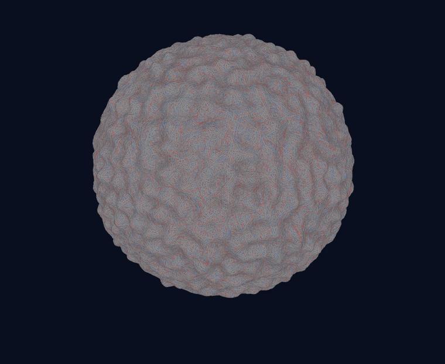
whole cell, 15 saved framesFull-size simulated cell, FORCE-ACCEPTED (10 Newton/step): each step is what the solver reached in the iterations it was given, so this shows a state of the model, not a measurement.Source
Record
qs_long_bt_nogrowth_20260925_040000
Commit
b496c1527
Class
native record
myosin minifilaments in the cortex, declared close-upFull-size simulated cell, FORCE-ACCEPTED (10 Newton/step): each step is what the solver reached in the iterations it was given, so this shows a state of the model, not a measurement.Source
Record
qs_long_bt_nogrowth_20260925_040000
Commit
b496c1527
Class
native record
native record
The native cell, 150 steps
The full cell — 7,545,139 nodes — for 150 steps of 0.01 s with growth off. Strands are coloured by their axial force from the raw record, red for tension and blue for compression.
FORCE-ACCEPTED (10 Newton/step). Tension magnitudes from this record are not quoted.
Missing: none declared (the ledger of qs_long_bt_nogrowth_20260925_040000_b496c1527 has no missing_declared key).
Unread (cell/language.py at b496c1527): FRONTIER is empty; BOUNDED_OMISSIONS['cytosol_electrochemistry']: pH-dependent rates, because no rate in the corpus is measured against pH; ABSENT_IN_SPECIMEN['integrin', 'clutch', 'substrate']: the suspended cell has no ligand surface or substrate.
the three pre-declared checksA smaller test cell (about 1.4 million nodes), FORCE-ACCEPTED (10 Newton/step): each step is what the solver reached in the iterations it was given.Source
Record
qs_mini_fluid_F0 / F1
Commit
2c6d6ab1c
Class
mini record
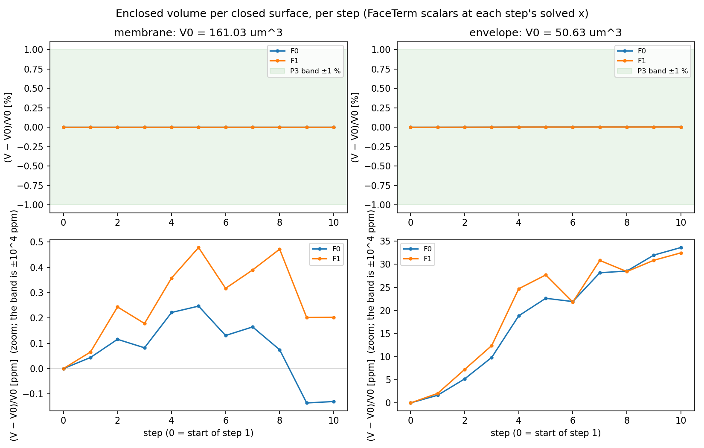
volume per closed surface, per stepA smaller test cell (about 1.4 million nodes), FORCE-ACCEPTED (10 Newton/step): each step is what the solver reached in the iterations it was given.Source
Record
qs_mini_fluid_F0 / F1
Commit
2c6d6ab1c
Class
mini record
mini record
The mini cell with its solvent
The 1.4 M-node mini cell run with and without the partitioned fluid for 10 steps. The run stays finite, fits in memory, and holds each closed surface's volume.
A development check of the fluid path, not a fluid result.
the whole cell, membrane translucent: on left, off rightSource
Record
ON qs_mini_mv_20260925_050710_e097d4dca; OFF qs_mini_speed_before_20260925_050750_556ee505a; renders 25c2fcfd7
Commit
e097d4dca / 556ee505a
Class
mini records: on has no class assigned; off is force-accepted
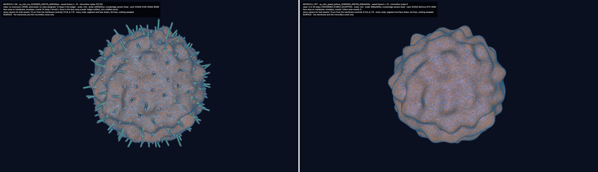
the membrane and the microvillus cores onlySource
Record
ON qs_mini_mv_20260925_050710_e097d4dca; OFF qs_mini_speed_before_20260925_050750_556ee505a; renders 25c2fcfd7
Commit
e097d4dca / 556ee505a
Class
mini records: on has no class assigned; off is force-accepted
mini record
Microvilli on and off
The same mini cell with microvilli (left, 107,100 microvillus nodes) and without (right), at saved frame 10 with the same camera, 13 µm from each membrane's centre.
On: the download has no score file, so no evidence class is assigned (12 steps). Off: FORCE-ACCEPTED (10 Newton/step), 30 steps. A picture of the build, not a mechanical result.
Missing (declared in qs_mini_mv_20260925_050710_e097d4dca/ledger.json missing_declared, and the same in the off record's): no excluded volume between filaments (contact pairs surfaces only): at the cortex's density the build is 3-5x above Onsager's phi_I, so ordering and steric stiffening are absent by construction.
Unread (cell/language.py at e097d4dca): FRONTIER is empty; BOUNDED_OMISSIONS['cytosol_electrochemistry']: pH-dependent rates, because no rate in the corpus is measured against pH; ABSENT_IN_SPECIMEN['integrin', 'clutch', 'substrate']: the suspended cell has no ligand surface or substrate.